Publications
Also find my full publication list at Google Scholar.
Preprint
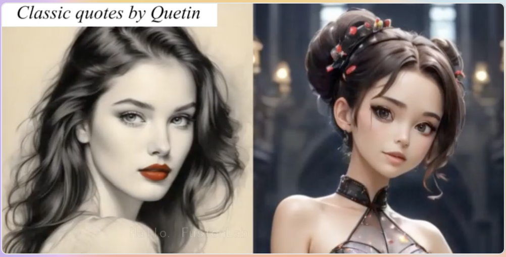
Mingwang Xu*, Hui Li*, Qingkun Su*, Hanlin Shang, Liwei Zhang, Ce Liu, Jingdong Wang, Yao Yao, Siyu Zhu*
arXiv preprint 2406.08801

4D SlingBAG: Spatial-temporal Coupled Gaussian Ball for Large-scale Dynamic 3D Photoacoustic Iterative Reconstruction
[paper]
Shuang Li*, Yibing Wang*, Jian Gao*, Chulhong Kim, Seongwook Choi, Yu Zhang, Qian Chen, Yao Yao*, Changhui Li*
arXiv preprint 2412.03898
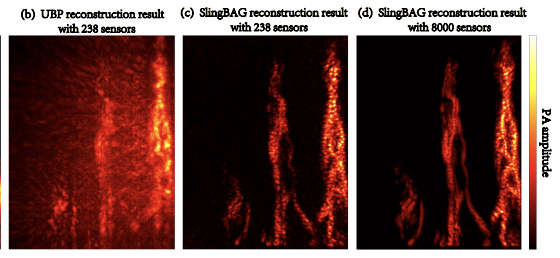
SlingBAG: Sliding Ball Adaptive Growth Algorithm with Differentiable Radiation Enables Super-efficient Iterative 3D Photoacoustic Image Reconstruction
[paper]
Shuang Li*, Yibing Wang*, Jian Gao*, Chulhong Kim, Seongwook Choi, Yu Zhang, Qian Chen, Yao Yao*, Changhui Li*
arXiv preprint 2407.11781
2025
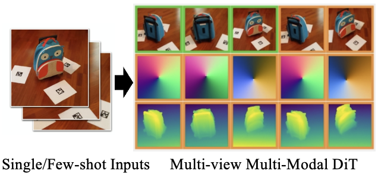
Yuanxun Lu*, Jingyang Zhang*, Tian Fang, Jean-Daniel Nahmias, Yanghai Tsin, Long Quan, Xun Cao, Yao Yao*, Shiwei Li
Computer Vision and Pattern Recognition (CVPR) 2025
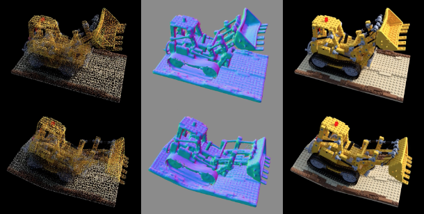
Xiangjun Gao*, Xiaoyu Li*, Yiyu Zhuang, Qi Zhang, Wenbo Hu, Chaopeng Zhang*, Yao Yao*, Ying Shan, Long Quan
Computer Vision and Pattern Recognition (CVPR) 2025
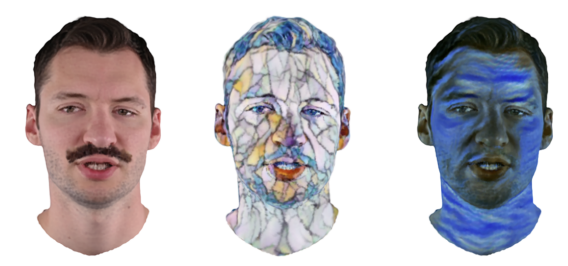
Jiawei Zhang, Zijian Wu, Zhiyang Liang, Yicheng Gong, Dongfang Hu, Yao Yao, Xun Cao, Hao Zhu*
Computer Vision and Pattern Recognition (CVPR) 2025
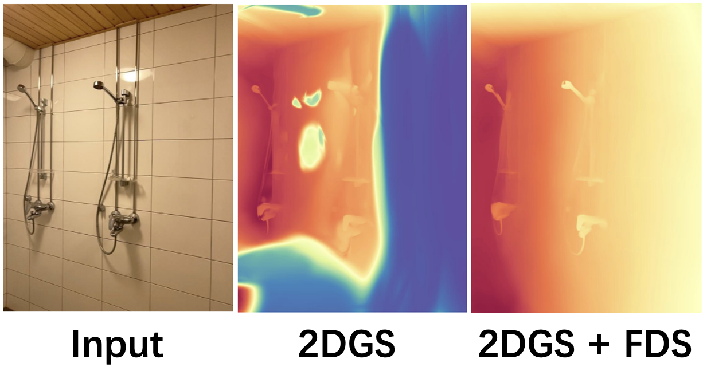
Flow Distillation Sampling: Regularizing 3D Gaussians with Pre-trained Matching Priors
Lin-Zhuo Chen*, Kangjie Liu*, Youtian Lin, Zhihao Li, Siyu Zhu, Xun Cao, Yao Yao*
International Conference on Learning Representations (ICLR) 2025
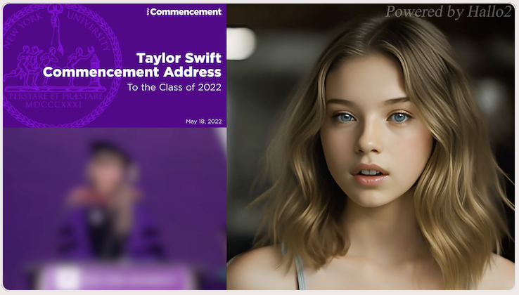
Jiahao Cui, Hui Li, Yao Yao, Hao Zhu, Hanlin Shang, Kaihui Cheng, Hang Zhou, Siyu Zhu*, Jingdong Wang
International Conference on Learning Representations (ICLR) 2025
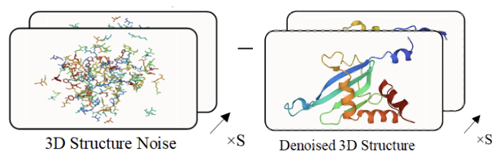
4D Diffusion for Dynamic Protein Structure Prediction with Reference Guided Motion Alignment
[paper]
Kaihui Cheng*, Ce Liu*, Qingkun Su, Jun Wang, Liwei Zhang, Yining Tang, Yao Yao, Siyu Zhu*, Yuan Qi*
AAAI Conference on Artificial Intelligence (AAAI) 2025
2024
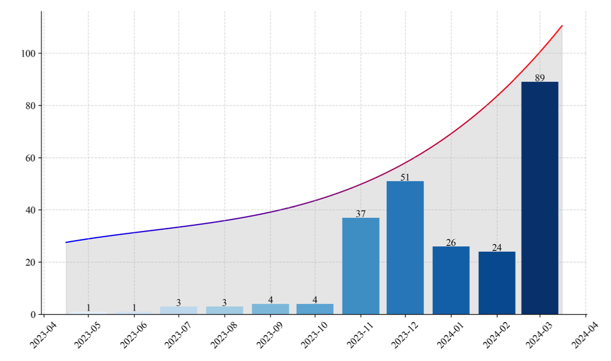
Advances in Differentiable Rendering Based on Three-Dimensional Gaussian Splatting (Invited)
[paper]
Jian Gao, Linzhuo Chen, Qiu Shen, Xun Cao, Yao Yao
Laser & Optoelectronics Progress, 2024, 61(16): 1611010
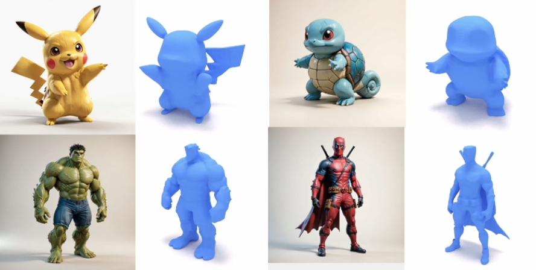
Shuang Wu*, Youtian Lin*, Feihu Zhang, Yifei Zeng, Jingxi Xu, Philip Torr, Xun Cao, Yao Yao*
Conference on Neural Information Processing Systems (NeurIPS) 2024
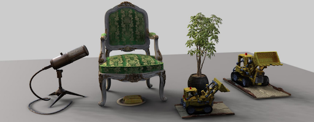
Relightable 3D Gaussian: Real-time Point Cloud Relighting with BRDF Decomposition and Ray Tracing
[paper]
[project]
Jian Gao*, Chun Gu*, Youtian Lin, Hao Zhu, Xun Cao, Li Zhang*, Yao Yao*
European Conference on Computer Vision (ECCV) 2024
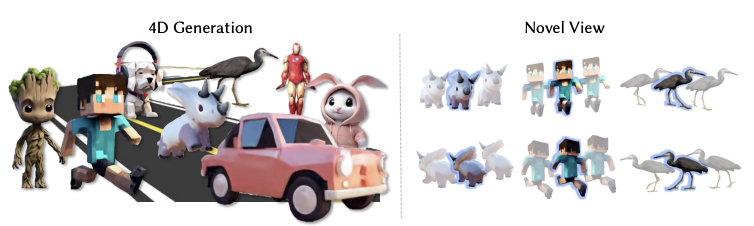
Yifei Zeng*, Yanqin Jiang*, Siyu Zhu, Yuanxun Lu, Youtian Lin, Hao Zhu, Weiming Hu, Xun Cao, Yao Yao*
European Conference on Computer Vision (ECCV) 2024
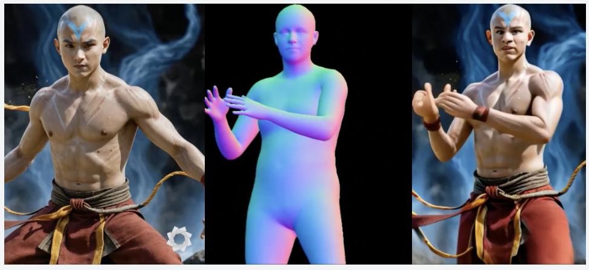
Champ: Controllable and Consistent Human Image Animation with 3D Parametric Guidance
[paper]
[project]
Shenhao Zhu*, Junming Leo Chen*, Zuozhuo Dai, Yinghui Xu, Xun Cao, Yao Yao, Hao Zhu*, Siyu Zhu*
European Conference on Computer Vision (ECCV) 2024
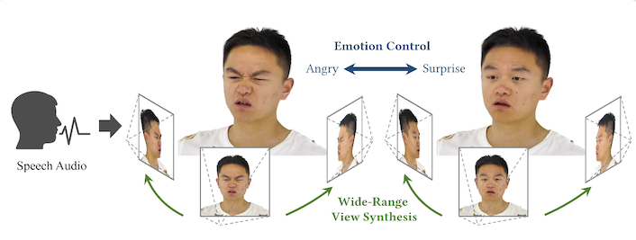
High-Fidelity Free-View Synthesis of Emotional 3D Talking Head
Qianyun He, Xinya Ji, Yicheng Gong, Yuanxun Lu, Zhengyu Diao, Linjia Huang, Yao Yao, Siyu Zhu, Zhan Ma, Songcen Xu, Xiaofei Wu, Zixiao Zhang, Xun Cao, Hao Zhu*
European Conference on Computer Vision (ECCV) 2024
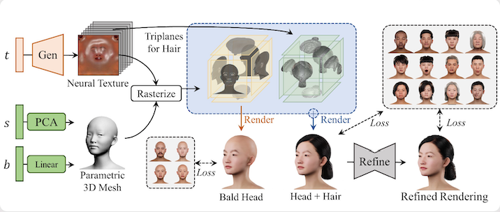
Head360: Learning a Parametric 3D Full-Head for Free-View Synthesis in 360°
Yuxiao He, Yiyu Zhuang, Yanwen Wang, Yao Yao, Siyu Zhu, Xiaoyu Li, Qi Zhang, Xun Cao, Hao Zhu*
European Conference on Computer Vision (ECCV) 2024
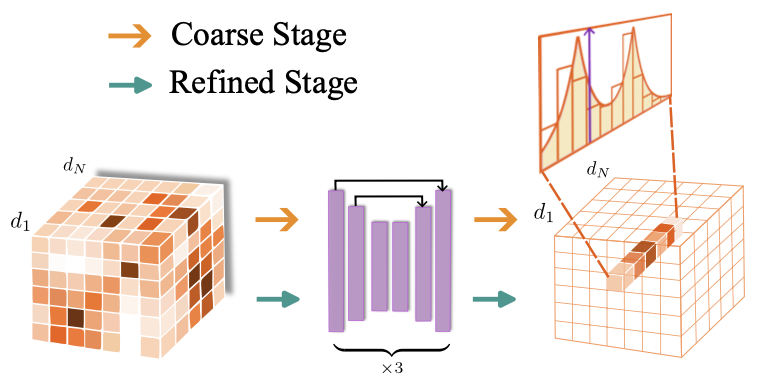
Stereo Risk: A Continuous Modeling Approach to Stereo Matching
[paper]
Ce Liu*, Suryansh Kumar*, Shuhang Gu, Radu Timofte, Yao Yao*, Luc Van Gool
International Conference on Machine Learning (ICML) 2024 (oral)
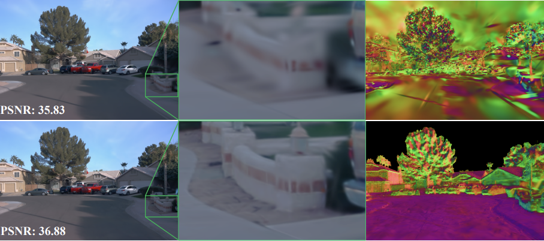
Kai Cheng*, Xiaoxiao Long*, Kaizhi Yang, Yao Yao, Wei Yin, Yuexin Ma, Wenping Wang, Xuejin Chen*
International Conference on Machine Learning (ICML) 2024
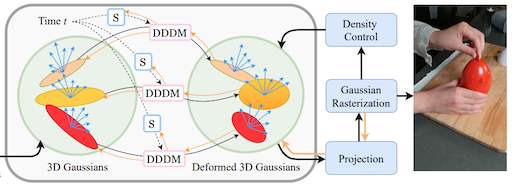
Youtian Lin, Zuozhuo Dai, Siyu Zhu, Yao Yao*
Computer Vision and Pattern Recognition (CVPR) 2024 (highlight)
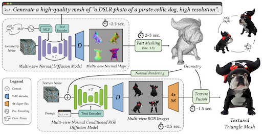
Yuanxun Lu, Jingyang Zhang, Shiwei Li, Tian Fang, David McKinnon, Yanghai Tsin, Long Quan, Xun Cao, Yao Yao*
Computer Vision and Pattern Recognition (CVPR) 2024
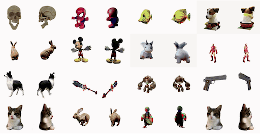
Yanqin Jiang, Li Zhang, Jin Gao, Weiming Hu, Yao Yao*
International Conference on Learning Representations (ICLR) 2024
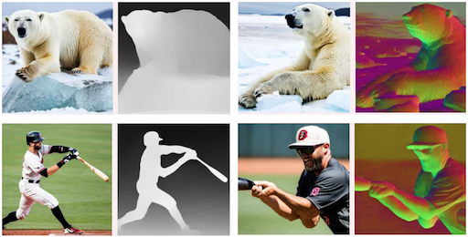
Jingyang Zhang, Shiwei Li, Yuanxun Lu, Tian Fang, David McKinnon, Yanghai Tsin, Long Quan, Yao Yao*
International Conference on Learning Representations (ICLR) 2024
2023
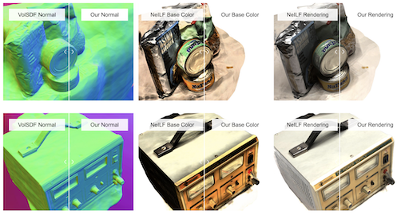
Jingyang Zhang, Yao Yao*, Shiwei Li, Jingbo Liu, Tian Fang, David McKinnon, Yanghai Tsin, Long Quan
International Conference on Computer Vision (ICCV) 2023

Siggraph Asia 2023
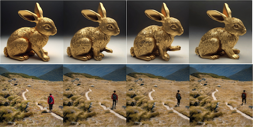
Zuozhuo Dai, Zhenghao Zhang, Yao Yao, Bingxue Qiu, Siyu Zhu, Long Qin, Weizhi Wang
arXiv 2311.12886
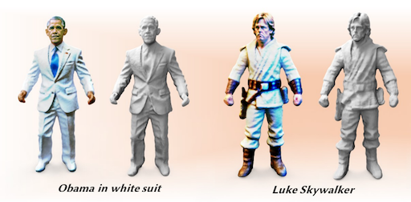
Yifei Zeng, Yuanxun Lu, Xinya Ji, Yao Yao, Hao Zhu*, Xun Cao
arXiv 2306.09864
2022
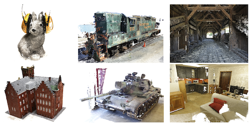
Jingyang Zhang, Shiwei Li, Zixin Luo, Tian Fang, Yao Yao*
International Journal of Computer Vision (IJCV) 2022 (invited paper)
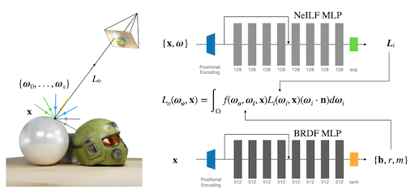
Yao Yao, Jingyang Zhang, Jingbo Liu, Yihang Qu, Tian Fang, David McKinnon, Yanghai Tsin, Long Quan
European Conference on Computer Vision (ECCV) 2022
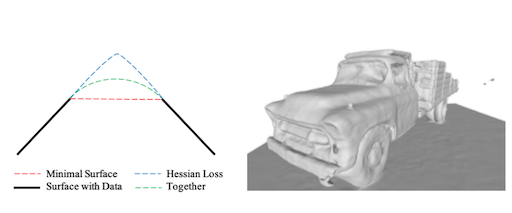
Critical Regularizations for Neural Surface Reconstruction in the Wild
[paper]
Jingyang Zhang, Yao Yao*, Shiwei Li, Tian Fang, David McKinnon, Yanghai Tsin, Long Quan
Computer Vision and Pattern Recognition (CVPR) 2022
2021
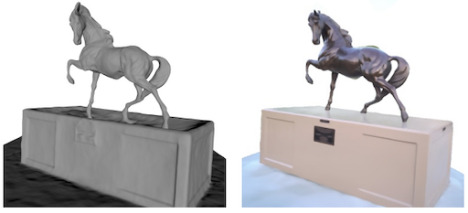
Jingyang Zhang, Yao Yao*, Long Quan
International Conference on Computer Vision (ICCV) 2021 (oral)
2020
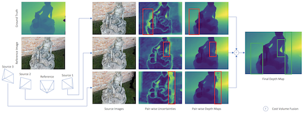
Jingyang Zhang, Yao Yao*, Shiwei Li, Zixin Luo, Tian Fang
British Machine Vision Conference (BMVC) 2020 (oral)
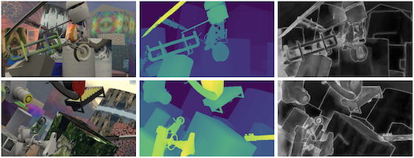
Jingyang Zhang, Yao Yao*, Zixin Luo, Shiwei Li, Tianwei Shen, Tian Fang, Long Quan
International Conference on Pattern Recognition (ICPR) 2020 (best student paper award)
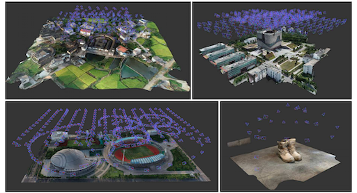
Yao Yao, Zixin Luo, Shiwei Li, Jingyang Zhang, Yufan Ren, Lei Zhou, Tian Fang, Long Quan
Computer Vision and Pattern Recognition (CVPR) 2020
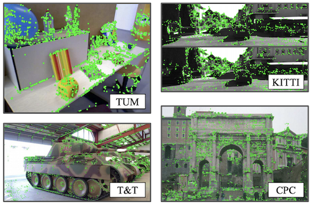
Zixin Luo, Lei Zhou, Xuyang Bai, Hongkai Chen, Jiahui Zhang, Yao Yao, Shiwei Li, Tian Fang, Long Quan
Computer Vision and Pattern Recognition (CVPR) 2020
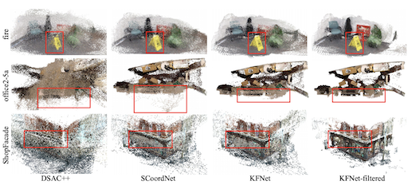
Lei Zhou, Zixin Luo, Tianwei Shen, Jiahui Zhang, Mingmin Zhen, Yao Yao, Tian Fang, Long Quan
Computer Vision and Pattern Recognition (CVPR) 2020 (oral)
2019
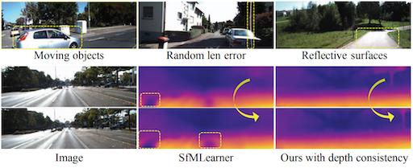
Tianwei Shen, Lei Zhou, Zixin Luo, Yao Yao, Shiwei Li, Jiahui Zhang, Tian Fang, Long Quan
International Conference on Computer Vision Workshops (ICCVW) 2019
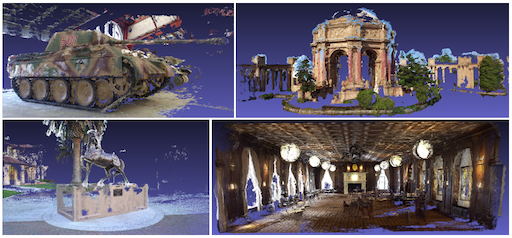
Yao Yao, Zixin Luo, Shiwei Li, Tianwei Shen, Tian Fang, Long Quan
Computer Vision and Pattern Recognition (CVPR) 2019
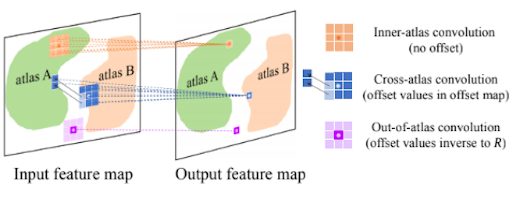
Cross-atlas Convolution for Parameterization Invariant Learning on Textured Mesh Surface
[paper]
Shiwei Li, Zixin Luo, Mingmin Zhen, Yao Yao, Tianwei Shen, Tian Fang, Long Quan
Computer Vision and Pattern Recognition (CVPR) 2019
Zixin Luo, Tianwei Shen, Lei Zhou, Jiahui Zhang, Yao Yao, Shiwei Li, Tian Fang, Long Quan
Computer Vision and Pattern Recognition (CVPR) 2019 (oral)
2018
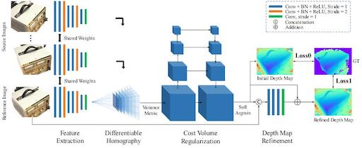
Yao Yao, Zixin Luo, Shiwei Li, Tian Fang, Long Quan
European Conference on Computer Vision (ECCV) 2018 (oral)
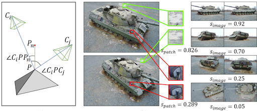
Zixin Luo, Tianwei Shen, Lei Zhou, Siyu Zhu, Runze Zhang, Yao Yao, Tian Fang, Long Quan
European Conference on Computer Vision (ECCV) 2018
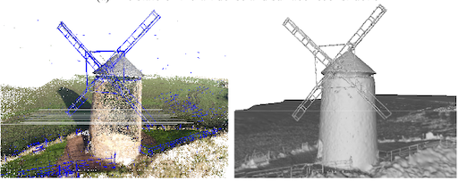
Shiwei Li, Yao Yao, Tian Fang, Long Quan
Computer Vision and Pattern Recognition (CVPR) 2018
2017
Reletive Camera Refinement for Accurate Dense Reconstruction
[paper]
Yao Yao, Shiwei Li, Siyu Zhu, Hanyu Deng, Tian Fang, Long Quan
International Conference on 3D Vision (3DV) 2017 (spotlight oral)
2014

Revised depth map estimation for multi-view stereo
[paper]
Yao Yao, Hao Zhu, Yongming Nie, Xiaoli Ji, Xun Cao
International Conference on 3D Imaging (IC3D) 2014 (oral)